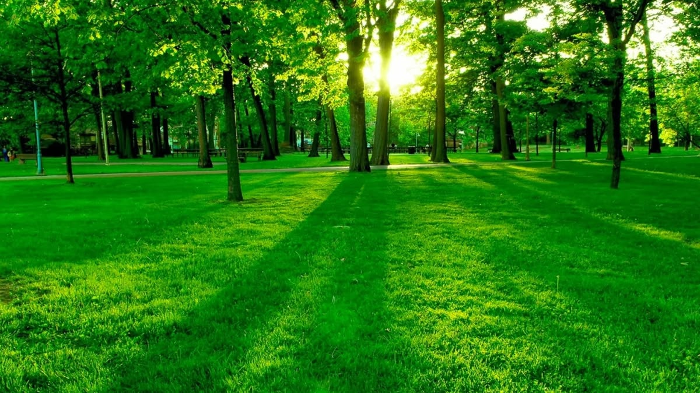

Our mission
To bring people together to protect the environment and build healthier, cleaner communities through hands-on action and education.
We are a community-led group of volunteers who believe a cleaner neighbourhood starts with people who show up for it.
Clean-Matrix began when a few neighbours got tired of walking past the same litter every day and decided to pick it up together. That one afternoon turned into a regular meet-up, and the meet-up turned into a movement.
Today we organise clean-ups, run awareness sessions in schools and work with local partners to cut waste at the source. Everything we do is powered by volunteers.

To bring people together to protect the environment and build healthier, cleaner communities through hands-on action and education.
A world where every community takes pride in its shared spaces, and caring for the planet is part of everyday life.
Regular litter picks in streets, parks, rivers and beaches, open to anyone who wants to help.
Workshops and school visits that teach practical ways to reduce, reuse and recycle.
Collection points for plastics, e-waste and textiles so less ends up in landfill.
Tree planting and garden projects that bring life back to neglected corners.